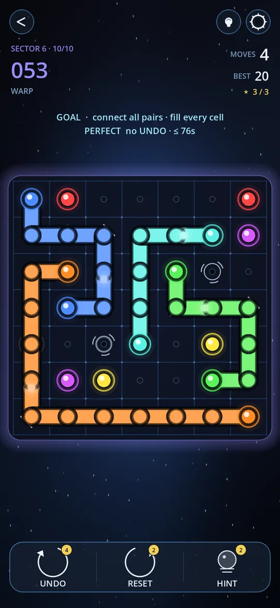

Portals break the one thing every flow puzzle takes for granted: that a line has to crawl from cell to cell. Two linked rings make two far-apart cells neighbours. Draw into one, carry on from the other, and everything in between stays free.


The rule
Portals come in linked pairs. When your line reaches one portal, it may continue from its twin, as if the two cells were next to each other. On a phone that works like this: draw your line onto the portal, lift your finger, then tap the linked portal and keep drawing from there.
A few details:
- The jump only connects the two portal cells. The cells between them are not part of the line, so other colours can use them.
- A portal cell is still a normal cell too: a line can pass over it without jumping.
- In the Portals pack, every portal is built into the route of some line. If a level has a portal, you'll need it.
Six tips for portal puzzles
1. Find the colour that can't get there on foot
Look for a pair whose dots are clearly cut off from each other, by other dots, walls of lines or the edge. That colour almost certainly needs the portal.
2. A portal is a shortcut that splits the board
The stretch a line skips becomes room for other colours. Before jumping, look at what the skipped area needs. Sometimes a jump is right precisely because another colour needs the cells it leaves free.
3. Check the landing
Look at what's around the exit portal before you jump. A twin in a tight corner leaves only one or two ways to continue, which often decides the rest of the route.
4. Pockets can have hidden doors
A pocket of empty cells with one visible opening normally can't be filled by a passing line. With a portal inside, the pocket has a second door, through the twin. Count portals as openings when you read regions.
5. Two portal pairs, two different jobs
On boards with two or three portal pairs, each pair usually serves a different colour. Match pairs to colours early; it narrows things down fast.
6. Don't forget the walk-over
Because a portal cell is also a normal cell, the line that jumps isn't the only option for it. On fill levels the portal cell itself must still be covered by someone.
A worked example
Say a red dot sits in the top-left corner and its partner in the bottom-right, with a wall of other colours across the middle. Walking around is impossible. Now notice a portal ring two cells from the red dot and its twin near the bottom-right corner. The plan writes itself: red runs from its dot to the nearby ring, jumps, and finishes from the twin to its partner. Everything in the middle stays free for the other colours, which is usually exactly the space they need. When a level looks blocked, look for the colour whose dots are on opposite sides of the blockage, then find the portal pair that bridges it.
Where you'll meet portals
The Portals pack has 100 levels on 6×6 to 10×10 boards. It starts with one portal pair per level, adds a second in sector 4 and a third from sector 8, and from sector 5 every cell has to be filled. Portals also appear in the campaign.
Placing portals in the editor
In the Puzzle Editor, pick the ◉ PORTAL tool, tap an empty cell, then tap a second empty cell for the other end. The editor links them right away. Bigger grids allow more portal pairs. See how to make your own flow puzzle for the full walkthrough, and send the code to a friend: they can play it in the browser, portals and all.
Play Circuit Trace free on Google Play: 100 portal levels and 600 more flow puzzles.
Frequently asked questions
How do I use a portal in Circuit Trace?
Draw your line onto a portal, lift your finger, then tap the linked portal and keep drawing from there.
Do the cells between two portals belong to the line?
No. Only the two portal cells are connected. The cells in between stay free for other colours.
Do I have to use every portal?
In the Portals pack, yes: every portal is part of a route. In puzzles from the editor that depends on the creator.